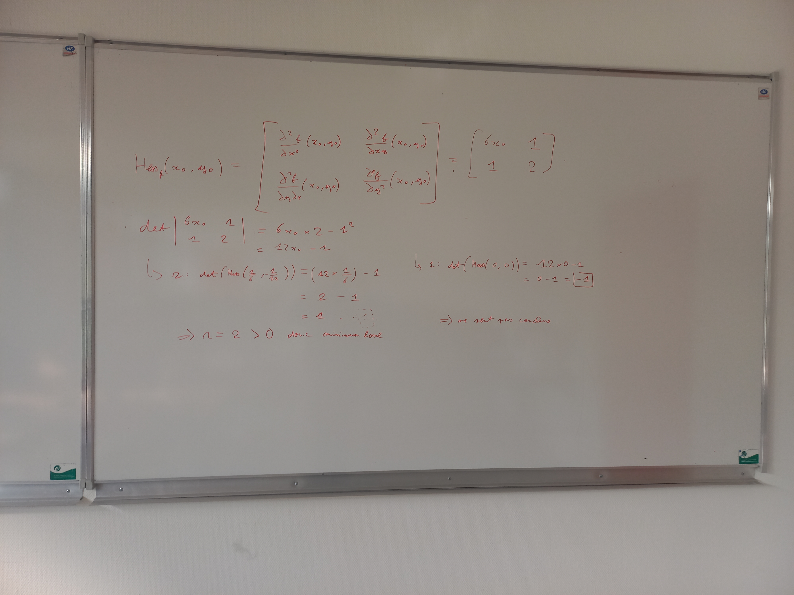

SHELL

#chargement du fichier "Experience_marquante.md
Bilan de l'année
- Voici un bilan de l'année :
Ma premiere année de BUT Réseaux et Télécommunications a été marquée par une découverte des bases du réseau, de la programmation et de l'administration système. j'ai pu apprendre à configurer des réseaux simples, à comprendre les protocoles de communication et à développer des compétences en programmation, nottament le langage Python et javascript.
D'ailleurs, il est important de noter que c'est grâce à la formation de BUT Réseaux et Télécommunication que j'ai pu enfin comprendre en grande partie les notions de mathématique de la Premiere et Termnal Scientifique puisque c'est durant cette periode ou j'ai perdu le plaisir d'en faire.

Maintenant, j'adore à nouveau les maths
Pour conclure, meme si ce fut une année plutot difficile à cause du rythme d'apprentissage fort contraignant, il est fort probable que je passe en 2eme années.
#